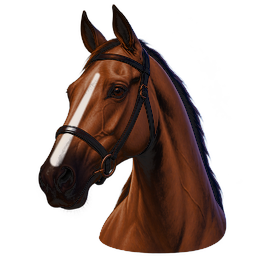

FOAL“Leaves the gate like almost nothing in the breed. There's no closing kick in him, so he'll want the lead and to hold it.” — Trainer's read, projects S at five
Today's bars show a baby (the white tick is where he'll be at two), with no sign that his speed is one in a thousand or that his finish is weak.